マハムニパゴダ/Mahamuni Pagoda
タイ、ミャンマー珍寺パトロールもいよいよ最終ステージである。
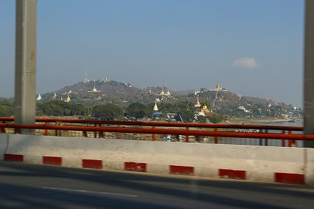
モンユアから一路、古都マンダレーに戻る。
ここには15年前に見逃したモノがあるのだ。
向ったのは街の中心部から少し離れたマハムニパゴダ。
マンダレー最大のパゴダである。
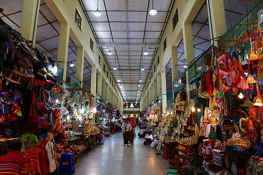
中心のパゴダから東西南北に４つの参道があり、それぞれに土産物屋が並んでいる。
こちらは比較的賑やかな参道。
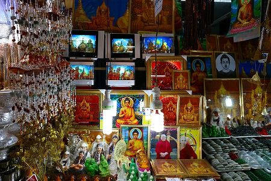
各種民芸品や仏陀グッズが並んでおり、ついつい寄り道してしまう。
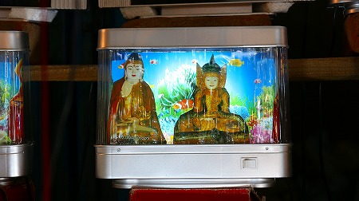
気になったのはコレ。
ミャンマーの有名な仏像の写真がグルグル回っている。
インテリアに最適すぎるだろう、コレ。
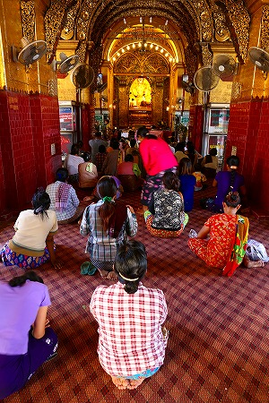
そんなこんなで中央のパゴダ。
丸いアーチの向こうに金色に輝く御本尊が見える。
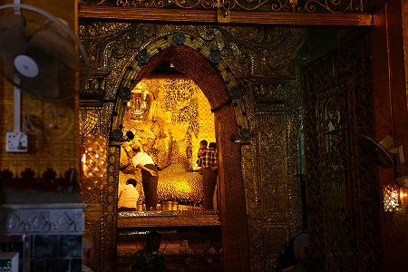
中では参拝者が本尊のマハムニ仏に金箔を貼っていた。
自分の体の悪いところに貼ると病が治るということらしい。
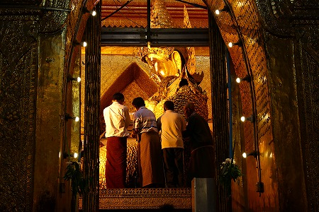
このマハムニ仏のある部屋には男性しか入れない。
なので女性は外で参拝することになる。
私も金箔を貼らせてもらった。頭が良くなりたいのだが、仏像が大きくて届きませんでしたよ…。
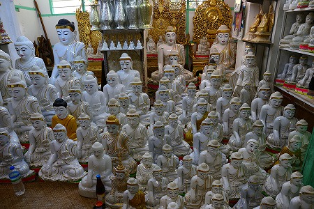
先ほどと逆側の参道。ひっそりとしていた。仏像屋さん。
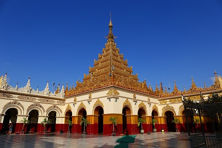
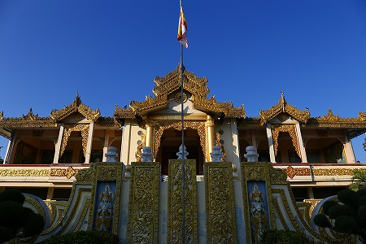
お寺の入り口にある宝物殿的な建物。
ここには仏教世界ジオラマがあるのだ。
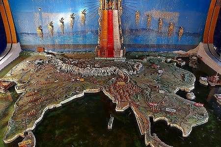
15年前に訪れた際は丁度閉館時間になってしまい、ほとんど見られなかった。
15年越しにやっと見ることができたよ。
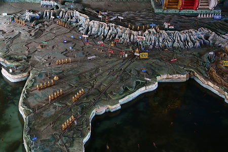
このジオラマはインドで生まれた仏教がアジアに広がっていく様子を現したもの。
インドから四方にお坊さんの行列が拡散している。
何だか鉄道のジオラマっぽいなあ。
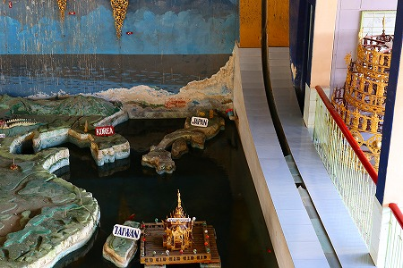
ジオラマの端っこには日本もある。
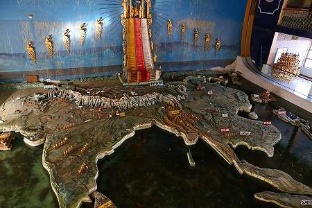
海の部分には水が張ってあり、小さな魚が泳いでいた。
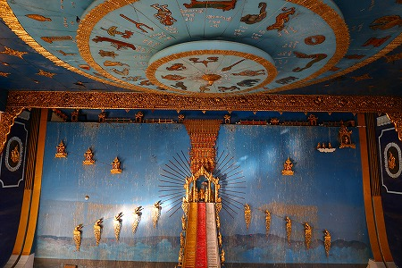
背後には大階段があり、天上世界へと続いている。
仏教の世界観を示した世界モデル。
それは単に勢力範囲を誇示するだけでなく、仏教を介してアジアが平穏な地になることへの希望が込められているように思えた。
これにてタイ、ミャンマーの旅は終了。
10〜15年前に訪れた寺の再訪だったが、変わったところもあり、そうでもなかったところもあり、パトロールし甲斐のある旅でしたよ。
おしまい
タイ・ミャンマー珍寺パトロールに戻る
珍寺大道場 HOME